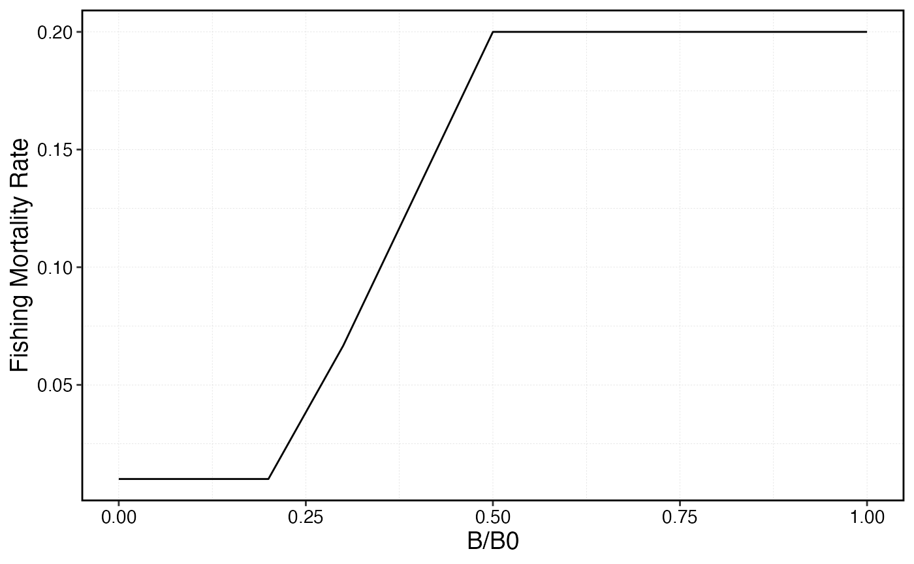
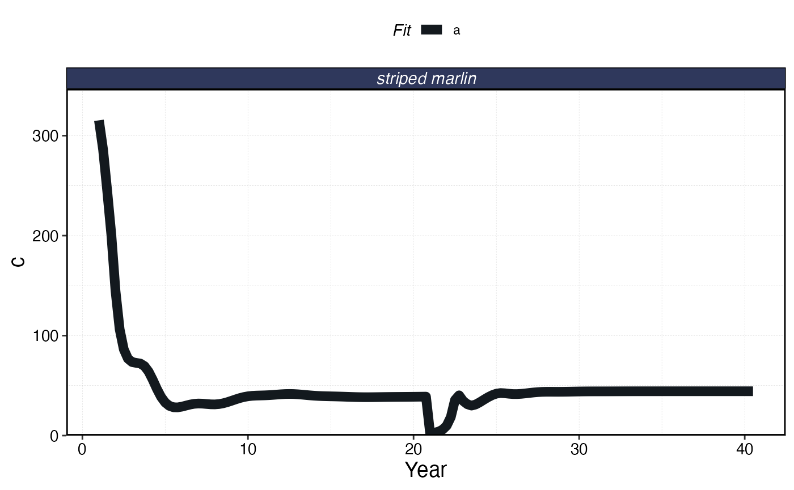
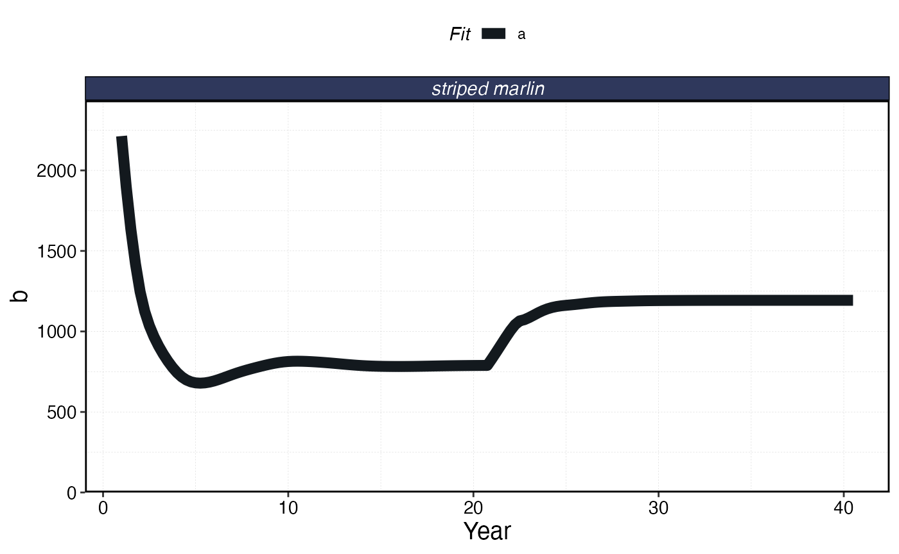

marlin has a lot of features built into it to simulate
dynamics over time. However, we cannot possibly build in every possible
use case a researcher might have.
To that end, and important feature of marlin is that the
outputs of a marlin simulation can be passed as the input
to a marlin simulation. This means you can run the model
for one time step, insert whatever whacky stuff you want to do,
then run a new step.
As an example, we’ll do a very cartoonish version of a “management strategy evaluation”, where we
Simulate a fishery for a time step
Simulate a perfect stock assessment that tells us depletion (biomass / unfished biomass)
Applies a harvest control rule that sets a catch quota based on the results of our assessment
Run another time step with the supplied quota.
Repeat process
library(marlin)
library(tidyverse)
#> ── Attaching core tidyverse packages ──────────────────────── tidyverse 2.0.0 ──
#> ✔ dplyr 1.1.4 ✔ readr 2.1.5
#> ✔ forcats 1.0.0 ✔ stringr 1.5.1
#> ✔ ggplot2 3.5.1 ✔ tibble 3.2.1
#> ✔ lubridate 1.9.3 ✔ tidyr 1.3.1
#> ✔ purrr 1.0.2
#> ── Conflicts ────────────────────────────────────────── tidyverse_conflicts() ──
#> ✖ dplyr::filter() masks stats::filter()
#> ✖ dplyr::lag() masks stats::lag()
#> ℹ Use the conflicted package (<http://conflicted.r-lib.org/>) to force all conflicts to become errors
theme_set(theme_marlin(base_size = 14))
resolution <- 10 # resolution is in squared patches, so 20 implies a 20X20 system, i.e. 400 patches
burn_years <- 20
seasons <- 4
sim_steps <- 20 * seasons
time_step <- 1 / seasons
fauna <-
list(
"striped marlin" = create_critter(
scientific_name = "Kajikia audax",
adult_diffusion = 10,
seasons = seasons,
fished_depletion = 0.2,
resolution = resolution,
steepness = 0.6,
ssb0 = 1000
)
)
fleets <- list(
"longline" = create_fleet(
list("striped marlin" = Metier$new(
critter = fauna$`striped marlin`,
price = 10,
sel_form = "logistic",
sel_start = 1,
sel_delta = .01,
catchability = 0,
p_explt = 2
)
),
base_effort = resolution ^ 2,
resolution = resolution,
responsiveness = .5,
cost_per_unit_effort = 1,
fleet_model = "open access")
,
"handline" = create_fleet(
list("striped marlin" = Metier$new(
critter = fauna$`striped marlin`,
price = 10,
sel_form = "logistic",
sel_start = 1,
sel_delta = .01,
catchability = 0,
p_explt = 1
)
),
base_effort = resolution ^ 2,
resolution = resolution,
fleet_model = "constant effort"
))
fleets <- tune_fleets(fauna, fleets, tune_type = "depletion")
hcr_cutoff <- 0.2
hcr_target <- 0.5
max_u <- 0.2
depletion <- seq(0,1, by= 0.1)
hcr_slope <- max_u / (hcr_target - hcr_cutoff)
hcr_intercept <- -hcr_slope * hcr_cutoff
hcr <- pmin(max_u,pmax(.01,hcr_slope * depletion + hcr_intercept))
hcr_frame <- data.frame(depletion = depletion, hcr = hcr)
hcr_frame %>%
ggplot(aes(depletion, hcr)) +
geom_line() +
scale_x_continuous(name = "B/B0") +
scale_y_continuous(name = "Fishing Mortality Rate")
mse_sim <- simmar(fauna = fauna,
fleets = fleets,
years = burn_years)
test <- process_marlin(mse_sim, keep_age = FALSE)
initial_conditions <- mse_sim[[length(mse_sim)]]
starting_step = marlin::clean_steps(last(names(mse_sim)))
for (y in 2:sim_steps){
depletion <- purrr::map(mse_sim[[length(mse_sim)]], ~ sum(.x$ssb_p_a) / .x$ssb0)
u <- map(depletion, ~ pmin(max_u,pmax(0.01,hcr_slope * .x + hcr_intercept)))
quotas <- purrr::map2(mse_sim[[length(mse_sim)]], u, ~ sum(.x$ssb_p_a) * .y)
next_step <- simmar(
fauna = fauna,
fleets = fleets,
steps = 1,
initial_conditions = initial_conditions,
manager = list(quotas = quotas),
starting_step = starting_step,
keep_starting_step = FALSE
)
initial_conditions <- next_step[[length(next_step)]]
starting_step = marlin::clean_steps(last(names(next_step)))
mse_sim <- append(mse_sim, next_step)
}
processed_mse_sim <- process_marlin(mse_sim)
a = processed_mse_sim$fauna |>
group_by(step, critter) |>
summarise(ssb = sum(ssb))
#> `summarise()` has grouped output by 'step'. You can override using the
#> `.groups` argument.
b = processed_mse_sim$fauna |>
group_by(step, critter) |>
summarise(c = sum(c))
#> `summarise()` has grouped output by 'step'. You can override using the
#> `.groups` argument.
plot_marlin(processed_mse_sim, plot_var = "c", max_scale = FALSE)
plot_marlin(processed_mse_sim, plot_var = "b", max_scale = FALSE)